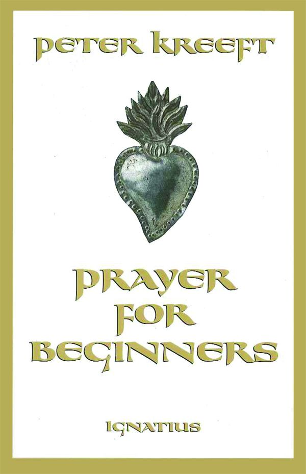

Peter Kreeft, a Catholic philosopher at Boston College, says this book could have been called “Prayer for Dummies”: it is for people who find praying hard, and “for Marthas, not for Marys”, busy people who keep finding excuses not to pray. “In other words, people like me.” It is a beginner's book written by a beginner, built mostly on the principles of Brother Lawrence's The Practice of the Presence of God. The first half deals with the mind (how to start, what to say, distractions); the second half with the harder battle of the will (sin, renunciation, suffering, patience, grace, perseverance). Each chapter is short on purpose, so you can read it slowly and then actually pray.
Chapter 1 · Necessity
Eating keeps the body alive; prayer keeps the soul alive, and your soul is you. You will get a new body at the resurrection, but not a new soul. Prayer is real contact with God, and God is to the soul what the soul is to the body. Without it the soul withers.
So the book can change your life on two conditions. Read it slowly, “under the eye of God”, in complete honesty. And do it: “It is a cookbook, not a dinner.” Reading about prayer can feel like praying. Don't be the theologian who, offered after death the choice between Heaven and a lecture on Heaven, chose the lecture. Dostoyevsky: “love in action is a harsh and dreadful thing compared to love in dreams.” What keeps us admiring the ideal instead of taking the first small step is impatience and a lack of humility. “This book does not teach you how to run, or even walk, at prayer; it teaches you how to crawl.”
Chapter 2 · Motives
Chapters 3–4 · Methods and words
We like to think prayer is too high for us, because that gives us an excuse. That is false humility. Can you talk to a friend? Then you can pray. “You do not have to wait until you become a saint. This is the way to become a saint.” The single most important piece of advice is one word: Begin!
A method is a technique: an easier means to a harder end, like pushing a button to turn on a light. But prayer is love, and love is too simple (it comes from the centre of the self), too free (no one can cause it, not even God) and too great (nothing is greater than love to cause it) for technique. Jesus gave a model prayer, not a method.
Chapter 5 · Steps
The closest Kreeft comes to a method is what you do at a railway crossing. God is the train crossing the tracks of your life, “and you want to get run over by this train.”
Can you give God one minute of each hour? Then Kreeft makes it concrete: stop reading this book and pray for one minute. If you can't, you are addicted to activity; if you can but won't, you love what you're doing more than God. “So you have no time to love God because you are reading about loving God? That is insane.” “Please rob me and give it to God.” And: “Are you finished? Do not read another word until you are.”
Chapters 6–7 · Thoughts and faith
“Sow a thought, reap an act; sow an act, reap a habit; sow a habit, reap a character; sow a character, reap a destiny.” Matter is moved from outside, spirit from within, so thought is where action starts (even the Buddha's Dhammapada opens: “All that we are depends on our thoughts”). Saint Paul: “take every thought captive to obey Christ.”
Mind and will depend on each other. The will has to command the mind to stop, look and listen; we only seek what we want. But the more the mind knows God, the more the will loves him. Their opposites feed each other too: indifference breeds ignorance and ignorance indifference. (Indifference, not hate, is the real opposite of love: you can love and hate someone at once, but not love them and be indifferent.)
We can't see God, rarely feel him, and can't prove he cares (his existence may be provable, his love is a free gift). We know he's present because he promised: “Lo, I am with you always.” Faith is simply believing God's promises: “God said it, and I believe it, and that settles it.” Kreeft defends this as reasonable, since God “can neither deceive nor be deceived”.
Many people now pray, in effect, “Lord, I believe; help my bad feelings.” But feelings are “dessert, not bread or meat”. God hides himself, as in the Eucharist (which doesn't look, feel or prove itself to be Christ), “to tempt us out of hiding”, the way you win over a frightened animal. Aquinas, the greatest mind in theology, wrote of it: “Sight, taste, and touch in Thee are each deceived; the ear alone most safely is believed.” Christ didn't come down from the Cross, because then sight would have replaced faith; that is also why he doesn't take us down from ours.
Prayer needs only faith, hope and love, not holiness. Otherwise it would be a Catch-22, like a job you can't get without experience. “All who want to pray can.”
Chapter 8 · Themes
Prayer is practising the presence of God, who is infinite love, so it is never boring: “Only what gets old gets boring. And love never gets old.” We say what love says, in four themes, in this order:
We should be rapt in prayer, and also wrapped in it: “prayer is not in us, we are in prayer.”
Chapter 9 · “Jesus”
The Jesus Prayer is just the name, “Jesus” (or “Lord Jesus Christ, have mercy on me, a sinner”), said aloud or silently, anywhere, by beginners and saints alike. It is also the earliest creed: “Jesus is Lord.” The Catechism: the name “contains all”, and it is “the only one that contains the presence it signifies”.
The only problem with this prayer is remembering to pray it, and that forgetting “is not merely a mental problem. Something in us fears remembering.” So ask for the grace to remember to ask.
Chapter 10 · Work
We're told to “pray constantly”, and most of life is activity, so actions must become prayer too. Lawrence: “We are as strictly obliged to adhere to God by action in the time of action as by prayer in the time of prayer.” God made us animals, not angels, with bodies that eat, sleep and work; these can't be obstacles to holiness, only roads to it.
You don't change the work (unless it's sinful, shoddy or lazy); you change the motive. Peel the potatoes because God wants potatoes peeled right now. Lawrence picked up a straw for the love of God; Mother Teresa told talkative theologians to “pick up a broom and sweep the room”. God doesn't want only our “quality time” (“a fake and dishonest phrase … ask any child”); he wants all of it, because “he is our Lover, not our boss.” Pascal: God instituted prayer “to impart to us his creatures the dignity of being causes.”
Chapters 11–12 · Distractions and sins
The will
Chapters 13–14 · Simplicity and renunciation
Prayer exists to make saints, which means becoming our true selves. Sanctity is hard for the same reason it is simple: “Purity of heart is to will one thing” (Kierkegaard). Anyone can love God partly; a saint loves him totally. It is like dieting: we are too spiritually fat to be filled with God, like the full inn at Bethlehem. John the Baptist's formula: “He must increase, but I must decrease.” Lawrence: sanctification doesn't depend on changing our works but on doing for God's sake what we usually do for our own.
Mary is the model, reduced to one word, fiat, “let it be”: the word that made the universe, then the Incarnation, and that can make a saint out of a sinner. This perfection isn't for an elite; God's love is perfect, “and perfect love demands the perfection of the beloved.” It is also simple realism: we are already wholly his by right, and must become so in fact.
Renunciation means turning away from sin, and also from innocent things that function as distractions, “like butterflies to a soldier”. It doesn't mean becoming a hermit; Lawrence did it in a kitchen. It's detachment: the fly and the flypaper are both God's good creations, but the fly can't fly while stuck. “God's bride must learn not to love her house as if it were her husband.” Lawrence recommends “one hearty renunciation of everything which we are sensible does not lead to God”, renewed like marriage vows, “to give the all for the All”. Augustine imagined telling God he wanted to know only “God and the soul, nothing more”; the world is the highway between them. Jim Elliot: “He is no fool who gives up the goods he cannot long keep for the good he cannot ever lose.”
Chapter 15 · Sufferings
Lawrence: “sufferings will be sweet to us while we are with Him, and the greatest pleasures will be, without Him, a cruel punishment.” God doesn't cause suffering (in Job it is Satan), but he uses it. Its sweetness lies in “with him”. A man devoted to a very difficult woman was asked why he didn't leave: “Better unhappy with her than happy without her.”
Suffering tests faith because at first it pulls us inward, like a tyrant with a whip shouting “Look at me!” Faith supplies the logic: if God is all-good, all-wise and all-powerful, then “all things work together for good to them that love God” (Romans 8:28). Not everything is good, but everything works for good, as the worst event ever, the crucifixion, became the greatest good. The pain is surgery, and the Surgeon is wounded too (T. S. Eliot). God holds back the sweetness at first so we don't get a spiritual sweet tooth, then gives it “as soon as we are capable of it”.
Demand sweetness and you'll find suffering; accept suffering for him and you'll find sweetness. Lawrence: God is often “nearer to us … in sickness than in health”, and “Comfort yourself with Him who holds you fastened to the Cross.” Not with a thought, Kreeft notes, but with a person. He closes with the old catechism answer: my only comfort in life and in death is “that I … am not my own but belong to my faithful Savior Jesus Christ.” (Kreeft credits the Westminster Confession; the words are the opening of the Heidelberg Catechism.)
Chapters 16–17 · Patience and grace
Lawrence on an eager friend: “she would go faster than grace. One does not become holy all at once.” Holiness is baked like a cake, grown like a plant, not built like a building. And God doesn't arrive on our schedule, “because he is a lover, not an airplane.”
Patience covers time and failures. Lawrence, when he failed: “I shall never do otherwise if You leave me to myself. It is You who must hinder my falling and mend what is amiss.” Then he “gave himself no further uneasiness about it”. That isn't indifference. Not seeing your faults leads to pride, being discouraged by them leads to despair; Lawrence was “very sensible of his faults, but not discouraged by them”. The devil wants us carefree before we sin and worried afterwards; God wants the reverse. And thank God even for noticing you've fallen off the horse: without that grace you'd forget that you'd forgotten.
Saint Thérèse: “Everything is a grace.” We can't make sunlight, but we can step outside, and the nearest door is best: Christ, “I am the door.” So don't sit in the cold little room of the self trying to produce feelings of love for God; go out and bask in his love for you. “We try too much and trust too little.” Lawrence's images: “Those who have the gale of the Holy Spirit go forward even in sleep,” like a sailboat with its sail up; and “hold yourself in prayer before God like a dumb or paralytic beggar at a rich man's gate.” Augustine named the four cardinal virtues as “humility, humility, humility, and humility.” Holy ambition and humility aren't opposites: “Prayer is spiritual surfing, soul-surfing on the waves of grace.”
Chapter 18 · Perseverance
Patience and perseverance are two sides of faithfulness, like water wearing away rock. Surfers make progress paddling out only in the troughs between waves; so it is in dry times. God weakens his presence in our feelings to strengthen it in our will, so we don't become “spiritual cripples” on emotional crutches. “Feelings, like waves, look more substantial than they are.” He knocks but won't force the door: in Holman Hunt's painting of Christ knocking, the door has no handle on the outside.
Churchill's legendary one-line speech: “Never, never, never give up.” How long? “To death. … And when death does make us stop, we will then truly begin.”
Pocket version